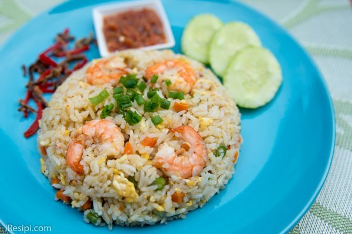

Nasi Goreng Cina

Bahan-bahan
- 2 mangkuk nasi putih
- 2 biji telur
- isi ayam, hiris nipis
- isi udang
- sayur campur (karot, kacang pis, isi jagung)
- lada sulah
- 1 kiub ayam
- 1/2 sudu kecil minyak bijan
- sedikit minyak untuk menumis
- 3 ulas bawang putih
- 2 biji bawang merah
- bawang goreng
- hirisan daun bawang
- hirisan cili
- timun
- sambal belacan
Cara Memasak
- Panaskan minyak dan masukkan bahan tumbuk kasar. Tumis sehingga kekuningan dan naik bau.
- Masukkan isi ayam dan kacau sampai agak masak dan masukkan pula isi udang.
- Kais sedikit bahan-bahan tumis tadi ke tepi kuali dan masukkan telur. Kacau telur sedikit supaya menjadi seperti scramble egg, tak perlu terlalu halus. Biar telur berketul-ketul.
- Masukkan pula kiub ayam yang dihancurkan, lada sulah dan juga sayuran campur.
- Masukkan nasi putih dan minyak bijan kemudian kacau sehingga nasi menjadi sebati dan sedikit garing.
- Perasakan dengan garam dan gula secukup rasa. Hati-hati masukkan garam kerana kiub ayam sudah masin rasanya. Angkat dan hidang bersama bahan hiasan.
Home